Best of Roll 9
Fujifilm 400 | Vic | Mar 2025
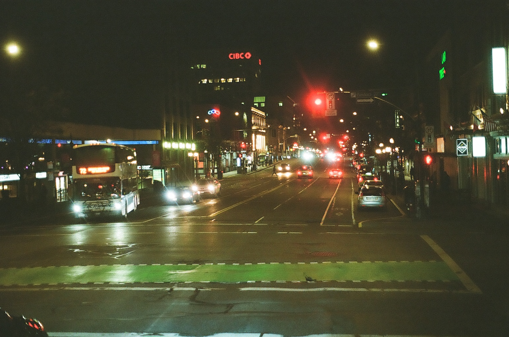
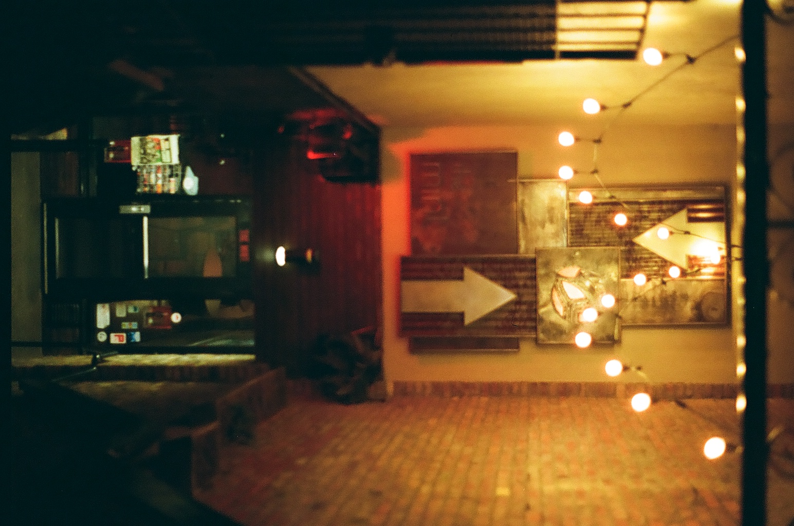
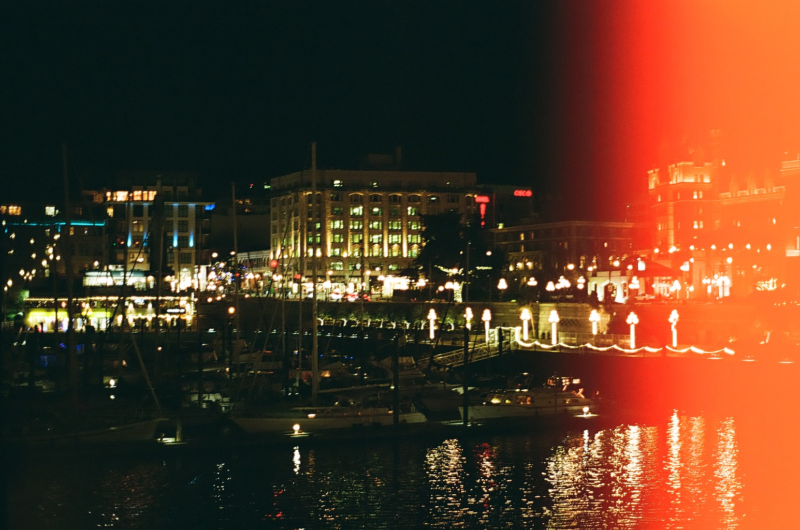
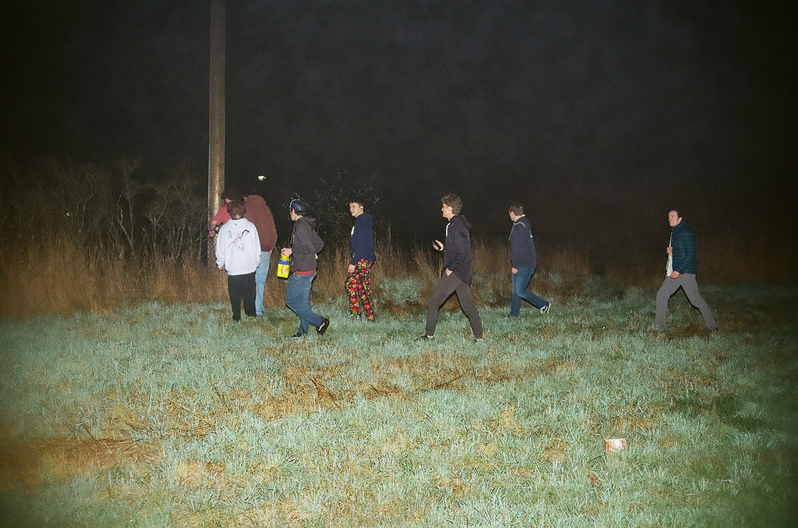
 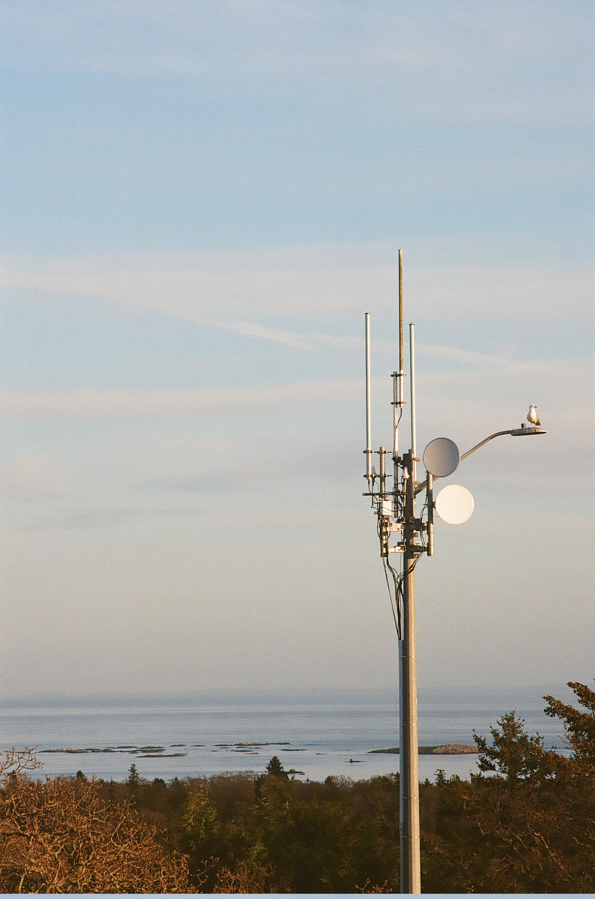
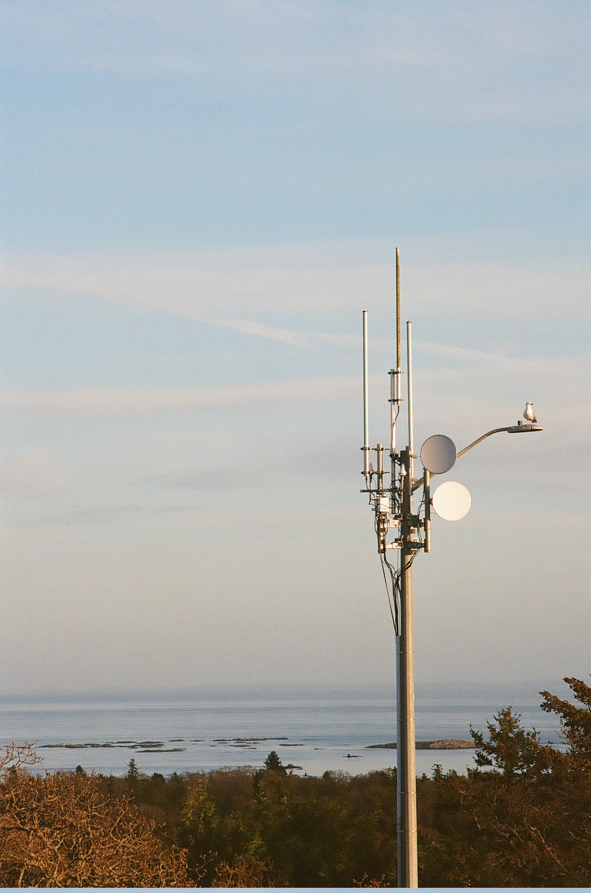
Best of Roll 5
Fujifilm 400 | Van/Vic | Feb 2025
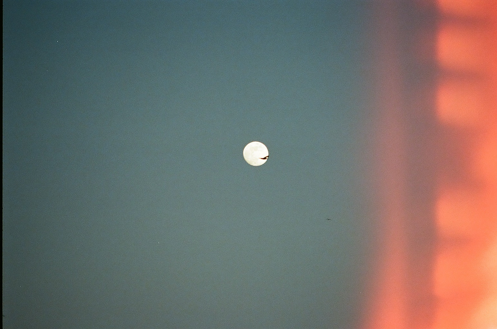
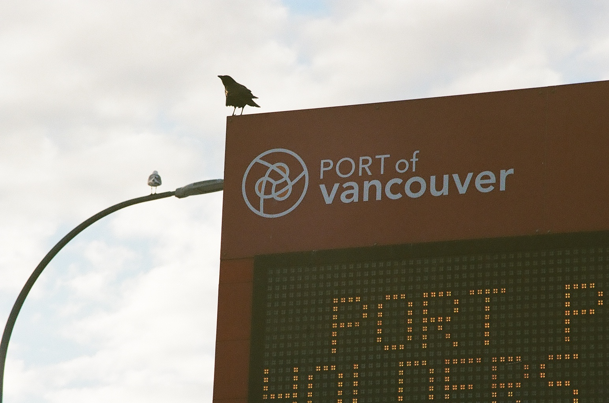
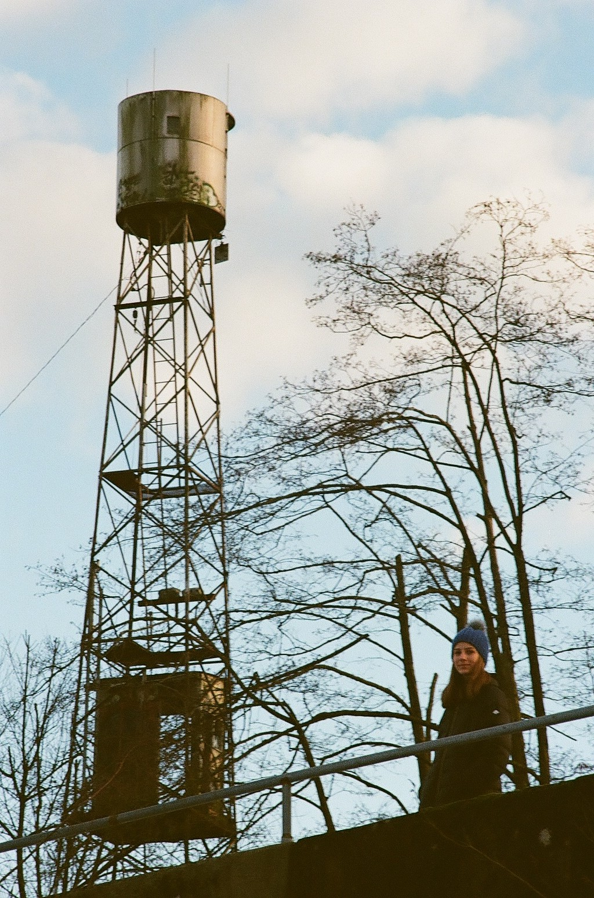
 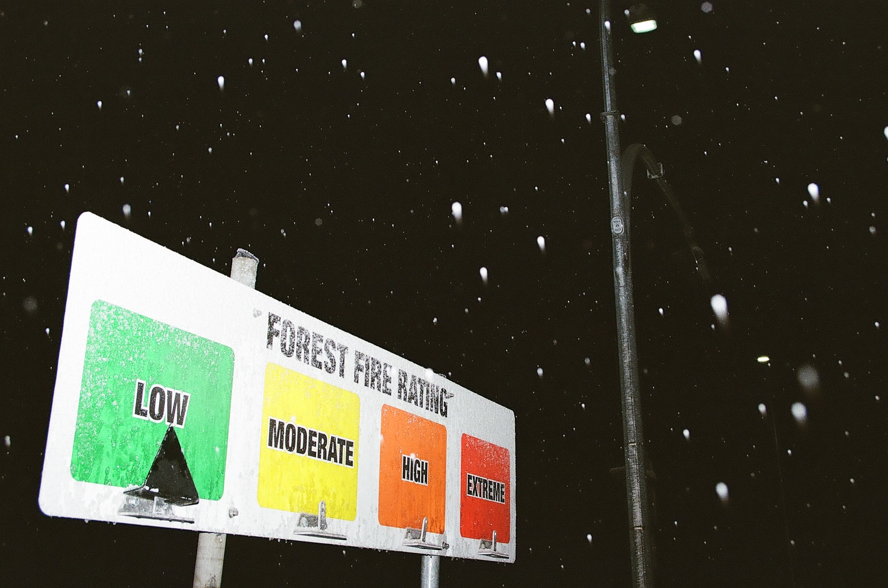
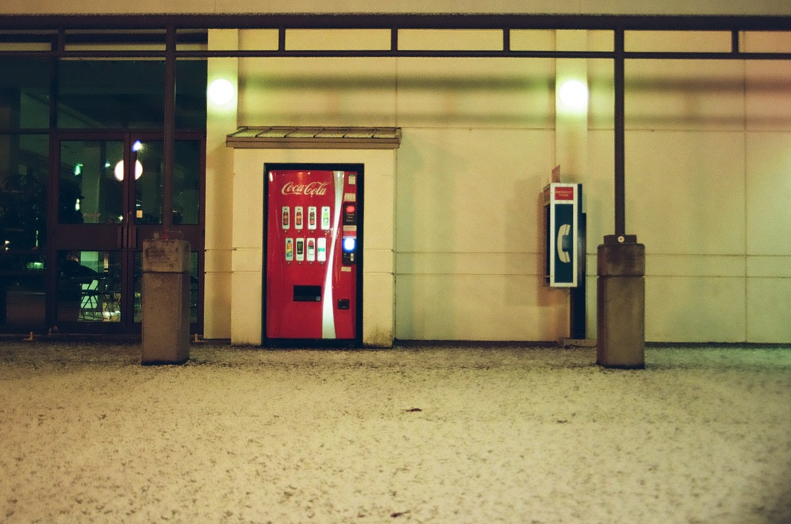
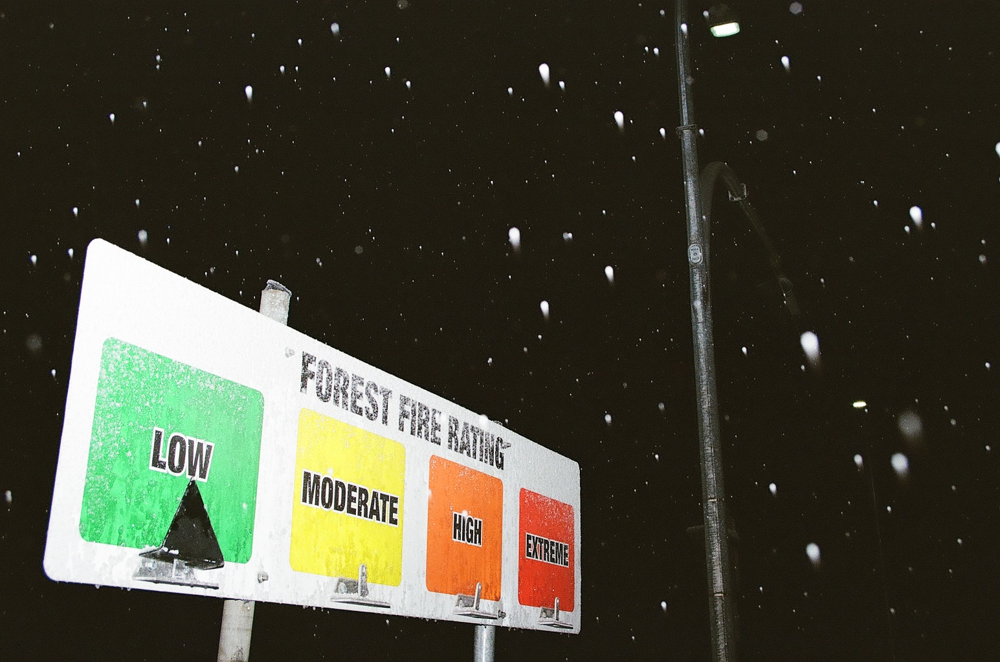
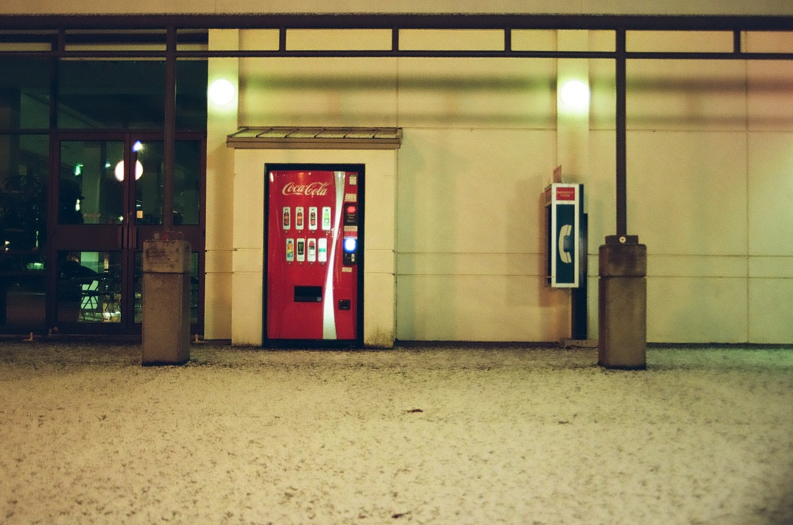
Best of Roll 3
Ilford XP2 400 | Vic | Jan 2025
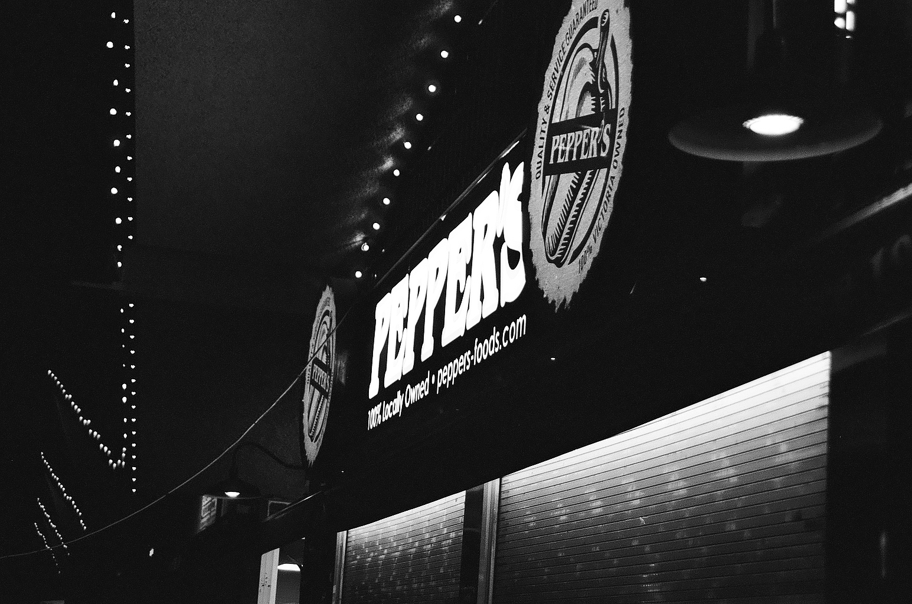
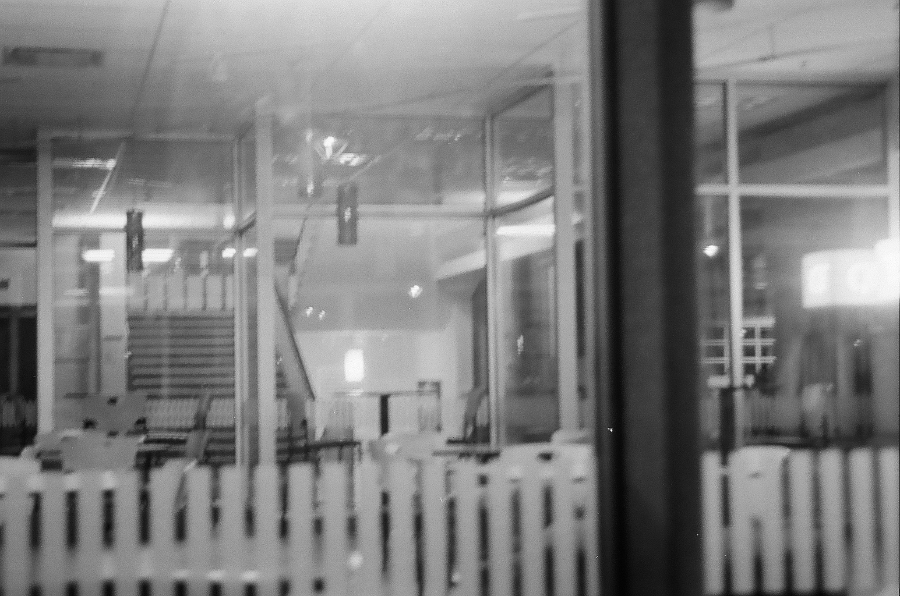
Why film?
-Physical
-Intentional
-Rewarding
-I hate having money in my bank account
I totally recommend it for anyone interested in photography. Film cameras are a fraction of the cost of digital cameras and you can easily achieve good-looking results once you learn how to properly expose an image (which is easier on film since ISO is given).
The Gear:
-Two Minolta Maxxum 7000s and one Minolta Maxxum 5000
-Lenses: 50mm, 35-70mm, 28-70mm, 50-200mm
-Black's TZ 7000 flash
Bogos Binted:
I'm still new to this so I've been letting the local camera stores develop, scan, and print my film. I want to have more control over this eventually, so I'm planning to develop B&W film myself soon.
Green: Scans available to view
Yellow: Will get scans
Red: Not planning to put on here / scan
Grey: I don't know yet (undeveloped B&W film in limbo)
All rolls shot on a Minolta Maxxum 7000 except #3 which was on a 5000.
| # |
Film |
Where |
When |
| 1 |
Fujifilm 400 |
Van |
Nov 2024 |
| 2 |
Fujifilm 400 |
Vic |
Nov-Dec 2024 |
| 3 |
Ilford XP2 400 |
Vic |
Jan 2025 |
| 4 |
Fujifilm 400 |
Vic |
Jan-Feb 2025 |
| 5 |
Fujifilm 400 |
Van/Vic |
Feb 2025 |
| 6 |
Ilford HP5 400 |
Van |
Feb 2025 |
| 7 |
Kodak T-Max 400 (Exp. 2013) |
Van |
Feb 2025 |
| 8 |
Kodak T-Max 400 (Exp. 2013) |
Vic |
Feb-Mar 2025 |
| 9 |
Fujifilm 400 |
Van/Vic |
Feb-Mar 2025 |
| 10 |
Kodak T-Max 400 (Exp. 2013) |
Vic |
Mar 2025 |
| 11 |
Kodak Portra 400 |
Vic |
Mar 2025 |
| 12 |
Fujifilm 400 |
Vic |
Mar 2025 |
| 13 |
Kodak T-Max 400 (Exp. 2013) |
Vic |
Mar 2025 |
Analog rant
No matter how powerful our computers get, digital interpretations of analog data are only an approximation. And to remain analog, its original form must be replicated perfectly every step on its way to the final product. If it gets converted to digital at any point, data will be lost and there's no way to make the original form analog again. Even if your vinyl contains real tape-recorded analog audio (nowadays most don't), you're probably playing it through digital speakers. Even if you're watching a movie shot on film, unless you're watching it in a theatre with a real film projector you're watching a digital version. And even if your photos are shot on film, unless you make prints in a darkroom you can only ever show people digital scans. It doesn't matter how nice the speaker, Blu-Ray or PNG is, digital can only approximate analog. I would love to try darkroom printing at some point but I don't see it happening anytime soon. Until then, my options are digital scans, or prints made from digital scans. Just remember that almost all the seemingly "analog" media you consume nowadays is just imperfect digital interpretations of its original form! :D